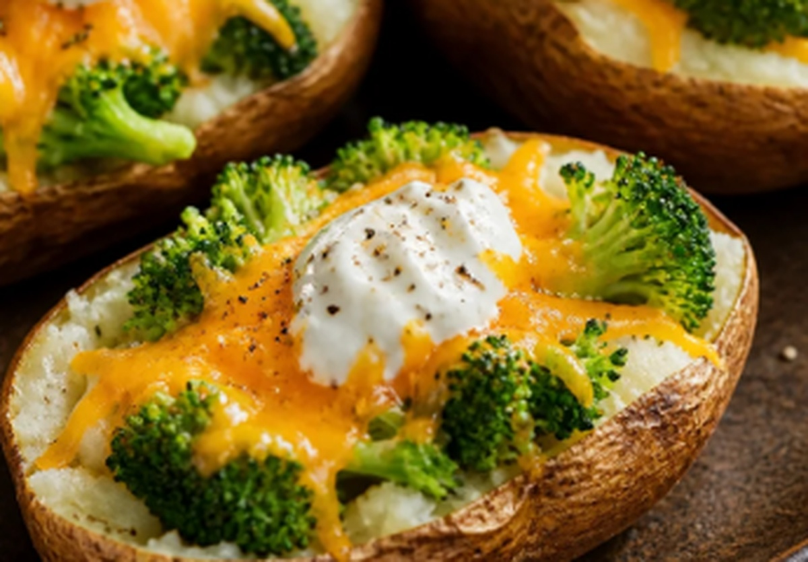

HOUSE RECIPE
Baked Potato Broccoli Cheddar Supper
Split baked potatoes topped with broccoli, cheddar, and Greek yogurt.
Ingredients
4 servings4large russet potatoes
2 cupsbroccoli florets
1 cupshredded cheddar

Split baked potatoes topped with broccoli, cheddar, and Greek yogurt.